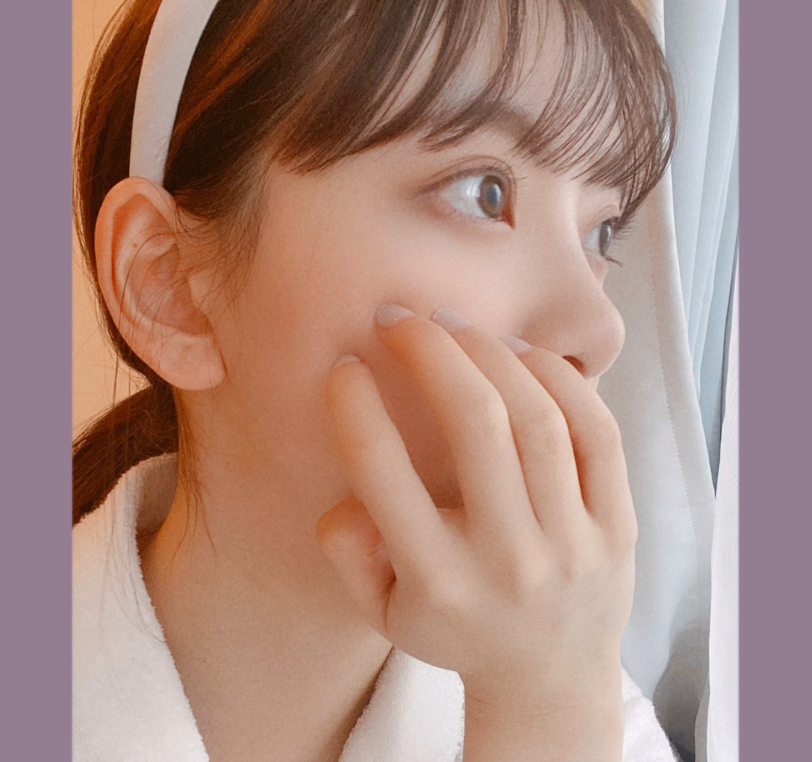
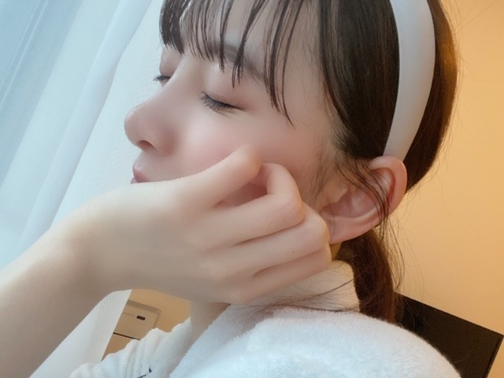
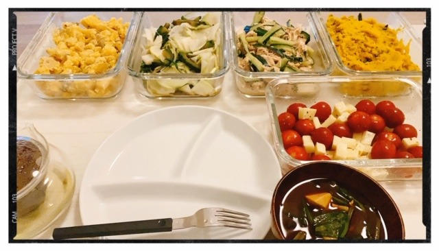

2020/0428Tueいつかのはなし
こんばんは
たくさんおすすめの曲を教えてくださり
ありがとうございます ☾
みなさんのおすすめ曲を聴いていて
初めて知れた曲もありましたし
素敵な曲にもたくさん出会えました
最近は寝る前に
歌詞を見て曲を聴いてMVを見て
曲や歌詞の意味を考えたりしています☺︎☺︎

･*☽
部屋着でダラダラしていてもなーと思い
メイクをささっとして
カチューシャをしてみました!
ちょっと気分が上がりました! 単純!

最近はですね、
語学の勉強をちょいとしたり
あとは、気になってたアニメを見始めたり
してます
YouTubeでもいろいろ観てますね〜

堀家はこうしていろんなおかずを
自分のプレートに盛り付けて
箸の混じり合いが無い食事方法に
変わりました!
一つのものを一緒に食べるのは
よくないみたいです
あと、手の消毒液が洗面所に置かれました☺︎
朝から寝る前までなるべく窓を開けて
換気もしています
みなさんも、出来ることから始めましょう!
あ、お知らせです
5月23日発売
アップトゥボーイVol.292
表紙巻頭をやらせていただきます!
5月27日発売の2nd写真集から
未公開カットをバーン!と20Pも
掲載していただきます☺︎
わーい☺︎
是非写真集と共にご覧ください꙳✧˖°
でははは
2020/04/28 19:48
コメント(444)
未央奈ブログ更新ありがとう〜！！
できるところからコロナ対策をしていきたいと思います！消毒も買ったし換気もしっかりしていきたいと思います！
わたしも弁解頑張らなくては、、、、！
いつも元気と活力をありがとう！
できるところからコロナ対策をしていきたいと思います！消毒も買ったし換気もしっかりしていきたいと思います！
わたしも弁解頑張らなくては、、、、！
いつも元気と活力をありがとう！
未央奈さんブログ更新ありがとうございます！！
ブログの更新楽しみにしてます！
知ってるかもしれないですが、she'sさんのLetterと、高橋優さんの福笑いめっちゃいい曲でおすすめです！
未央奈さんの紹介していた曲聴いてます！
ブログの更新楽しみにしてます！
知ってるかもしれないですが、she'sさんのLetterと、高橋優さんの福笑いめっちゃいい曲でおすすめです！
未央奈さんの紹介していた曲聴いてます！
更新待ってました〜✨
未央奈ちゃんカチューシャ
めっちゃ似合ってる( ¨̮ )
最近、アナスターシャの
MV見てから寝てるよ!!
語学の勉強してるんだね( ˙꒳˙ )
私はギターを練習中⸜( ॑꒳ ॑ )⸝
未央奈ちゃんも体調に気をつけてね!!
次の更新も待ってます✩.*˚
未央奈ちゃんカチューシャ
めっちゃ似合ってる( ¨̮ )
最近、アナスターシャの
MV見てから寝てるよ!!
語学の勉強してるんだね( ˙꒳˙ )
私はギターを練習中⸜( ॑꒳ ॑ )⸝
未央奈ちゃんも体調に気をつけてね!!
次の更新も待ってます✩.*˚
アップトゥボーイ絶対買います！
未央奈さんブログ更新ありがとうございます！！！！！！カチューシャしてる未央奈さん可愛いです！！！！(好きです笑)
早くコロナが終息するといいですね。自分は受験なのに、学校でみんなと勉強出来ないのがだんだん辛くなってきました。(学校や外へ行く事で学ぶ事が多いんです。)
未央奈さん、コロナに気をつけて下さい。
じゃ、またブログ更新した時に！！！
早くコロナが終息するといいですね。自分は受験なのに、学校でみんなと勉強出来ないのがだんだん辛くなってきました。(学校や外へ行く事で学ぶ事が多いんです。)
未央奈さん、コロナに気をつけて下さい。
じゃ、またブログ更新した時に！！！
未央奈ちゃんブログ更新ありがとう！！
パジャマ姿も可愛すぎ！！！！
写真集楽しみすぎるぐらいに楽しみに待ってます！
れん
パジャマ姿も可愛すぎ！！！！
写真集楽しみすぎるぐらいに楽しみに待ってます！
れん
もちろん！2冊とも買うよー！！！楽しみ ✨
オススメの曲教えてくれてありがとうございます！！おかげでbacknumberさん好きになりました！！
唯一の楽しみは未央奈ちゃんのブログを読むことです！！
いつもありがとうございます。そんな、ファン想いの未央奈ちゃんが大好きです！！
オススメの曲教えてくれてありがとうございます！！おかげでbacknumberさん好きになりました！！
唯一の楽しみは未央奈ちゃんのブログを読むことです！！
いつもありがとうございます。そんな、ファン想いの未央奈ちゃんが大好きです！！
写真集こんな時期だからこそ一層楽しみです！！！
ブログたくさん更新してくれて嬉しい〜！！
タオル～
気分転換は大事ですよね。
Youtubeね。
B'zさんのライブが配信されていたりとかね。
こういう時の発信力は強い。
そっか。
食事にも気を付けなくてはいけないのか。
ビュッフェじゃん！（笑）
それはそれで楽しそう！
の、下の顔はどんな時の？（笑）
あ、直前ですね。
気分転換は大事ですよね。
Youtubeね。
B'zさんのライブが配信されていたりとかね。
こういう時の発信力は強い。
そっか。
食事にも気を付けなくてはいけないのか。
ビュッフェじゃん！（笑）
それはそれで楽しそう！
の、下の顔はどんな時の？（笑）
あ、直前ですね。
堀ちゃん以上にカチューシャが似合う子をボクは見たことないです
着てる服はタオル生地でしょうか？
着心地良さそうでぐっすり寝れそう！
着心地良さそうでぐっすり寝れそう！
さてさて
今夜はＮＨＫにて
美彩先輩の歌ってる姿を見ましたので
『さらばシベリア鉄道』
の動画でも当たろうかしら・・・
それと
飛鳥ちゃんが歌う
『地球が丸いなら』
今さら
良い曲だなあ・・・と
気付いてしまったので
昼間
だいぶリピートしてしまいましたよ
なぜだろ？？
未央奈さん
家族みんなで
気を付けて生活してるんですね
しかも
美味しそうなご飯を一緒にして
今は
お家で英気を養って
きっとまた
元気な姿を
いっぱい観せてね
今夜はＮＨＫにて
美彩先輩の歌ってる姿を見ましたので
『さらばシベリア鉄道』
の動画でも当たろうかしら・・・
それと
飛鳥ちゃんが歌う
『地球が丸いなら』
今さら
良い曲だなあ・・・と
気付いてしまったので
昼間
だいぶリピートしてしまいましたよ
なぜだろ？？
未央奈さん
家族みんなで
気を付けて生活してるんですね
しかも
美味しそうなご飯を一緒にして
今は
お家で英気を養って
きっとまた
元気な姿を
いっぱい観せてね
未央奈ちゃんこんばんは。難しい状況が続いていますが、未央奈ちゃんはお元気そうで何よりです。
来月は写真集や巻頭表紙など、楽しみがいっぱいですね。せっかく未央奈ちゃんが教えてくれたんだから、急いで予約しなきゃ！
さて、先日のブログでオススメの曲は？って言ってましたよね。いろいろありすぎて絞れなかったんだけど、今テレビを見てたら「マツコの知らない世界」で昭和ポップスの世界という特集をやっていて、全部歌えるんですよ(笑)。だから、もう平成も終わり令和になった今でも、ぼくはやっぱり自分が子供の頃に見ていた或いは生まれる前も含めて昭和４０～５０年代頃のポップスが大好きなのでオススメします。未央奈ちゃんたちも歌番組の特番とかで昭和のアイドルソング歌う機会もあると思いますが、ぜひこの時期にこそじっくりと聴いてみてほしいかな。
ではでは、また次のブログも待ってます。おうち時間楽しみながら頑張りましょうね！
来月は写真集や巻頭表紙など、楽しみがいっぱいですね。せっかく未央奈ちゃんが教えてくれたんだから、急いで予約しなきゃ！
さて、先日のブログでオススメの曲は？って言ってましたよね。いろいろありすぎて絞れなかったんだけど、今テレビを見てたら「マツコの知らない世界」で昭和ポップスの世界という特集をやっていて、全部歌えるんですよ(笑)。だから、もう平成も終わり令和になった今でも、ぼくはやっぱり自分が子供の頃に見ていた或いは生まれる前も含めて昭和４０～５０年代頃のポップスが大好きなのでオススメします。未央奈ちゃんたちも歌番組の特番とかで昭和のアイドルソング歌う機会もあると思いますが、ぜひこの時期にこそじっくりと聴いてみてほしいかな。
ではでは、また次のブログも待ってます。おうち時間楽しみながら頑張りましょうね！
ブログ更新ありがとう！
未央奈ちゃんのブログがモチベーションです！
アップトゥボーイ欲しい！買います！
未央奈ちゃんのブログがモチベーションです！
アップトゥボーイ欲しい！買います！
未央奈ー！ブログありがとう！！！
インスタも見てます！！♡
前回のブログを見て自分が普段聴いてる曲と沢山被っていて嬉しいです〜◎
未央奈にはこれも聴いてほしいなって思う曲があるので聴いてみてねー！↓
GReeeeNさんの「ソビト」と「道」、BUMP OF CHICKENさんの「プラネタリウム」と「firefly」、です！！
［質問です］
未央奈はメンバーとオンライン飲み会とかしたの？どんな話をしてるのかも気になります！教えて下さい！
インスタも見てます！！♡
前回のブログを見て自分が普段聴いてる曲と沢山被っていて嬉しいです〜◎
未央奈にはこれも聴いてほしいなって思う曲があるので聴いてみてねー！↓
GReeeeNさんの「ソビト」と「道」、BUMP OF CHICKENさんの「プラネタリウム」と「firefly」、です！！
［質問です］
未央奈はメンバーとオンライン飲み会とかしたの？どんな話をしてるのかも気になります！教えて下さい！
みおなかわいいなあ
もちろんUTB買うで！
もちろんUTB買うで！
未央奈〜！！
ブログ更新ありがとう
うちは明日ボヘミアン・ラプソディ見る予定だよ笑笑
カチューシャと部屋着めっっっっちゃ可愛い
次の更新も待ってるね！
ブログ更新ありがとう
うちは明日ボヘミアン・ラプソディ見る予定だよ笑笑
カチューシャと部屋着めっっっっちゃ可愛い
次の更新も待ってるね！
アップトゥボーイも楽しみ
ほんと早く発売日にならないかな
ほんと早く発売日にならないかな
ブログ更新ありがとうございます！
アップトゥボーイ、絶対買いますね！
写真集も楽しみです！
換気、大事ですよね…我が家でも1時間に一回は、私の部屋では常に窓が開いています笑
コロナに気を付けてお過ごしください
アップトゥボーイ、絶対買いますね！
写真集も楽しみです！
換気、大事ですよね…我が家でも1時間に一回は、私の部屋では常に窓が開いています笑
コロナに気を付けてお過ごしください
ヤッホー未央奈ブログありがとー ✨透き通った❗ピンク系統の肌色に見えるよね❗今から楽しみに待ってます‼️おやすみなさい❗
かわいいすき！
ブログありがとう！写真が美しいよお！！部屋着も可愛い！！前の質問で、パジャマがみたい！って言ったらこんなに載せてくれて嬉しいよお！！！たまたま載せてくれたのかもしれないけど笑笑 みおちゃんのブログ味があって、まとまってて、自撮り可愛くて、1番好き！！笑笑 お料理美味しそうだなぁ。食器も綺麗だし！！いつか料理教えてもらいたい笑笑 みおちゃんアニメ観てるのね！！私のおすすめは、約束のネバーランド、ワンピース、鬼滅の刃、となりの怪物くん、凪のあすから、めちゃくちゃ面白いからオススメです！雑誌買うね！！写真集も5冊注文済みだから、すごく楽しみ！！お金貯まったら追加で買うね！！握手会で早く会いたいーー！！
ももんが
ももんが
未央奈大好きだよ！！
未央奈ちゃんこんばんは♪
カチューシャ似合う(*^^*)
部屋着も可愛いね♪
お洒落な食べ方!
ビュッフェみたいだね(〃^ー^〃)
明日もHAPPYを
お休みなさい(^-^ゞ
カチューシャ似合う(*^^*)
部屋着も可愛いね♪
お洒落な食べ方!
ビュッフェみたいだね(〃^ー^〃)
明日もHAPPYを
お休みなさい(^-^ゞ
部屋着、カチューシャすごく似合って可愛いです。
自分も換気、手洗い、うがいを、しかっりやります。
美味しい料理、最高のブログありがとー。
自分も換気、手洗い、うがいを、しかっりやります。
美味しい料理、最高のブログありがとー。
いやいや、部屋着姿可愛すぎやて
カチューシャも最高です！
写真集楽しみすぎます〜！
カチューシャも最高です！
写真集楽しみすぎます〜！
好きです，お体に気を付けて頑張ってください．
未央奈ちゃん ブログ更新ありがとう〜！
やっぱり未央奈ちゃんはカチューシャが似合うね！
やっぱり未央奈ちゃんはカチューシャが似合うね！
[いつかのはなし]ありがとー❗️
白カチューシャいいですね。白が似合う❗️
前世マシュマロマンですかねー。
未央奈って鼻がスゴイ綺麗ですね。いい鼻。
また美味しそうなお料理で。バイキング方式パクります。
みんなで波乗り越えて早く会いたいです❗️
次のブログと写真集楽しみです❗️
白カチューシャいいですね。白が似合う❗️
前世マシュマロマンですかねー。
未央奈って鼻がスゴイ綺麗ですね。いい鼻。
また美味しそうなお料理で。バイキング方式パクります。
みんなで波乗り越えて早く会いたいです❗️
次のブログと写真集楽しみです❗️
こんばんわん
堀ちゃんのプレイリスト聞いてみるね～
私のおすすめは、
バレッタ
トキトキメキメキ
逃げ水
わーすたさんから、 タピオカミルクティー
いぬねこ。青春真っ盛り！
あるグループの、フィルター越しに見た空の青
コロナ対策いいですね！
部屋着にカチューシャかわいい～
ではまた(*´∇｀*)
堀ちゃんのプレイリスト聞いてみるね～
私のおすすめは、
バレッタ
トキトキメキメキ
逃げ水
わーすたさんから、 タピオカミルクティー
いぬねこ。青春真っ盛り！
あるグループの、フィルター越しに見た空の青
コロナ対策いいですね！
部屋着にカチューシャかわいい～
ではまた(*´∇｀*)
世知辛い世の中だぜ‼️(´Д｀)そこまで徹底的じゃないと‼️人類はコロナに勝てないのかΣ(゜Д゜)
未央奈ブログ更新ありがとう！
こちらこそ未央奈のプレイリストで知らなかった曲に出会えて嬉しい。ありがとう！
カチューシャすごく可愛い！未央奈はカチューシャ似合うね。
語学の勉強してるんだね。すごい！見習わなくては。
堀家はコロナ対策万全だね。家族がいるとお互いに心配だものね。
アップトゥボーイ予約したよ。20Pも未公開カットが見られるなんて嬉しい！楽しみだなあ。
では！
こちらこそ未央奈のプレイリストで知らなかった曲に出会えて嬉しい。ありがとう！
カチューシャすごく可愛い！未央奈はカチューシャ似合うね。
語学の勉強してるんだね。すごい！見習わなくては。
堀家はコロナ対策万全だね。家族がいるとお互いに心配だものね。
アップトゥボーイ予約したよ。20Pも未公開カットが見られるなんて嬉しい！楽しみだなあ。
では！
いよいよ写真集発売まで１ヶ月きりましたね！ワクワクがとまらないですよ(^○^)
未央奈ちゃん可愛い
本当にできることからやっていかないとね！
明日から大型連休だから、未央奈ちゃんに勧めてもらった音楽たくさん聴きますね
特にYUI聴こうかなあ。
僕も語学とか仕事関連の勉強、これを機に頑張ります！
未央奈ちゃん健康でいてね。
本当にできることからやっていかないとね！
明日から大型連休だから、未央奈ちゃんに勧めてもらった音楽たくさん聴きますね
特にYUI聴こうかなあ。
僕も語学とか仕事関連の勉強、これを機に頑張ります！
未央奈ちゃん健康でいてね。
チャァオ～～!☆彡
プリンセスみおちゃん❕❤️❤️❤️❤️❤️笑顔❇️❇️❇️
ブログ更新ありがとうございます❕❤️❤️❤️❤️❤️❇️❇️❇️笑顔❇️❇️❇️
みおちゃんは、本当にカチューシャが似合うねぇ～～⤴️⤴️❕❤️❤️❤️❤️❤️笑顔❇️❇️❇️
素敵だよぉ～～⤴️⤴️❕❤️❤️❤️❤️❤️笑顔❇️❇️❇️
明日も仕事頑張ってきます❕笑顔
あ、早く寝ないと❕焦
またねぇ❕❤️❤️❤️❤️❤️笑顔❇️❇️❇️
(σ≧▽≦)σ❤️❤️❤️❇️❇️❇️
❇️❇️おすまし！⚜️❇️彡
みおな~
更新ありがとう！
毎日未央奈が見れて幸せだよー。
写真集絶対3冊は買わせていただきます。
最近は未央奈ときいちゃんの「今野さんほっといてよ」を
見直してる 何回も見ちゃうんだよなー
これからも体調気をつけて頑張ってー
(早く握手会行きたーい)
更新ありがとう！
毎日未央奈が見れて幸せだよー。
写真集絶対3冊は買わせていただきます。
最近は未央奈ときいちゃんの「今野さんほっといてよ」を
見直してる 何回も見ちゃうんだよなー
これからも体調気をつけて頑張ってー
(早く握手会行きたーい)
今更感が強いですが…(笑)
about meという曲、おすすめです。
しんみりしたい時に聞くのがいいかもしれません！
お家時間、お互いに楽しみましょう！！
about meという曲、おすすめです。
しんみりしたい時に聞くのがいいかもしれません！
お家時間、お互いに楽しみましょう！！
めっちゃかわい〜
パジャマ未央奈は貴重だ！カチューシャは安定だね！
未央奈といえばの1つになってるね！
こうやって写真載せてくれるのは嬉しいです(*・∀・*)ノ
さすが堀家の食卓美味しそうだ☆プレートにライスくださいw
それに意識がえらいね！バイキングみたいな形式なんだ！
俺も今日換気して掃除しましたー。家でも手洗いうがいや消毒なども今までよりしてるよ。みんなでがんばればきっと事態も良くなるよね！頑張っていこうねd(^-^)
アップトゥボーイに写真集、のぎたびもあるしね！
５月は未央奈祭りやないかいw
ちゃんと、セブンネットで買わせていただきますよー♪
ブログ更新ありがとー！ただ俺もオレオ食べたくなってきましたw
牛乳はあるんだけどな。
2期生だけでのTV電話とかでリモート女子会、飲み会みたいのはやってるのかな？
卒業生も含めて。
それじゃまたー
でわわわ
未央奈といえばの1つになってるね！
こうやって写真載せてくれるのは嬉しいです(*・∀・*)ノ
さすが堀家の食卓美味しそうだ☆プレートにライスくださいw
それに意識がえらいね！バイキングみたいな形式なんだ！
俺も今日換気して掃除しましたー。家でも手洗いうがいや消毒なども今までよりしてるよ。みんなでがんばればきっと事態も良くなるよね！頑張っていこうねd(^-^)
アップトゥボーイに写真集、のぎたびもあるしね！
５月は未央奈祭りやないかいw
ちゃんと、セブンネットで買わせていただきますよー♪
ブログ更新ありがとー！ただ俺もオレオ食べたくなってきましたw
牛乳はあるんだけどな。
2期生だけでのTV電話とかでリモート女子会、飲み会みたいのはやってるのかな？
卒業生も含めて。
それじゃまたー
でわわわ
なんのアニメみてるのー？
未央奈ブログ更新ありがとう！
換気しまっす！
換気しまっす！
ブログ更新ありがとう
最近ストレス溜まるけど
堀ちゃん見れるとなごむ。
雑誌買いますね！
最近ストレス溜まるけど
堀ちゃん見れるとなごむ。
雑誌買いますね！
この時期メンバーとは連絡とったりしますか？
誰とよく連絡取りますか？
誰とよく連絡取りますか？
未央奈さん、ブログ更新ありがとう。どこにでもいるおっさんです。
未央奈さんの、「自分」を持っているところに憧れます。
すごく、カッコいいです。
未央奈さん、まだまだ、しばらくこの状況はつづきそうです。
みんなで、乗り越えていきましょう。
ひでき
未央奈さんの、「自分」を持っているところに憧れます。
すごく、カッコいいです。
未央奈さん、まだまだ、しばらくこの状況はつづきそうです。
みんなで、乗り越えていきましょう。
ひでき
お疲れ様です。最近コロナの治まりが見えてない様ですが、大丈夫ですか?
そういえば、この前のコメントで「GLAY大好き!」って言いましたが、オススメ曲いうの忘れてましたwたまに抜けてる事があるんすよね〜…。
因みにGLAYのオススメは「BELOVED」、それから「pure soul」です。「BELOVED」は初めてギターを手にした時に一番最初に課題にした曲です。
だから思い入れが強いですね。
最後に、堀ちゃん最近グッと大人っぽくなり綺麗になりましたね。あ、それに堀ちゃんのインスタをフォローさせていただきました。
では。
そういえば、この前のコメントで「GLAY大好き!」って言いましたが、オススメ曲いうの忘れてましたwたまに抜けてる事があるんすよね〜…。
因みにGLAYのオススメは「BELOVED」、それから「pure soul」です。「BELOVED」は初めてギターを手にした時に一番最初に課題にした曲です。
だから思い入れが強いですね。
最後に、堀ちゃん最近グッと大人っぽくなり綺麗になりましたね。あ、それに堀ちゃんのインスタをフォローさせていただきました。
では。
いやいや、部屋着姿可愛すぎやて
カチューシャも最高です！
写真集楽しみすぎます〜！
カチューシャも最高です！
写真集楽しみすぎます〜！
堀ちゃん！更新ありがとう！
カチューシャの堀ちゃん！
新鮮！！
なんでも似合う！笑
堀ちゃんの
おうち写真、次回も待ってます！
堀家のコロナ対策
真似します！
大皿じゃなくて
別皿によそってるんだ！
いい対策！
写真集も
もうすぐだね！！
楽しみにしてます！！
では！
体調1番で過ごしてね！
次回の更新も待ってます！！
おやすみおな〜！
カチューシャの堀ちゃん！
新鮮！！
なんでも似合う！笑
堀ちゃんの
おうち写真、次回も待ってます！
堀家のコロナ対策
真似します！
大皿じゃなくて
別皿によそってるんだ！
いい対策！
写真集も
もうすぐだね！！
楽しみにしてます！！
では！
体調1番で過ごしてね！
次回の更新も待ってます！！
おやすみおな〜！
ブログ更新有難う。
写真集予約しました！
応援してます。
写真集予約しました！
応援してます。


さくらちゃんとあやめちゃんとでんちゃんと同じ愛知県出身の覇王です！
未央奈ちゃんの白いカチューシャめっちゃ似合っていて、可愛いよ！
未央奈ちゃんの料理美味しそうだね！
体調を崩さないように気をつけて頑張ってください！
応援してます！